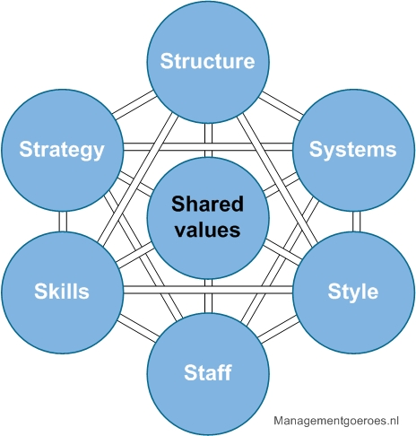
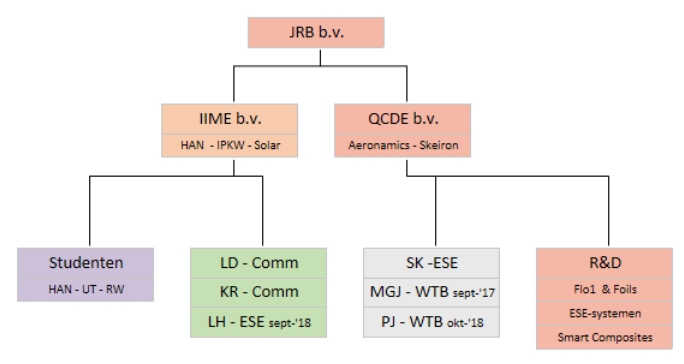
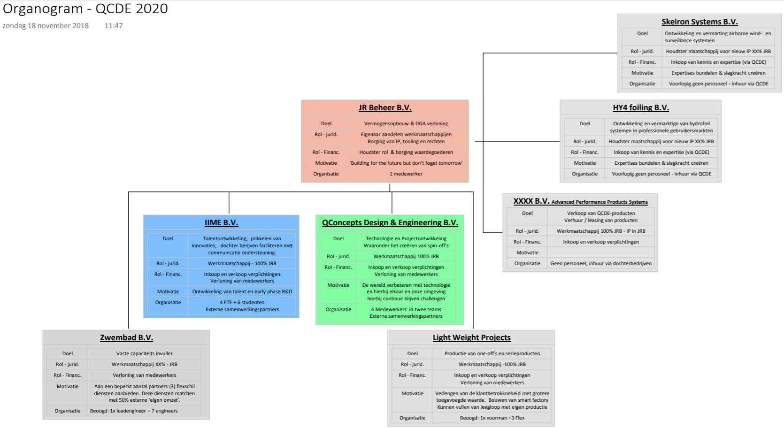
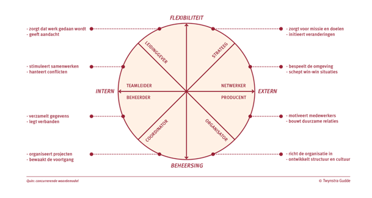

Voor de organisatie analyse wordt gebruik gemaakt van het 7S-model van McKinsey. Dit model raakt de relevante vlakken van QConcepts die specifiek voor dit project cruciaal zijn om te analyseren, onder andere de leiderschap en de processen binnen het bedrijf.

De raakvlakken van het 7S-model zijn: Structuur, Systemen, Strategie, Skills, Staff, Style en Shared Values. (zie afbeelding). Voornamelijk Systemen en Managementstijl zijn belangrijk om een juiste probleemanalyse bij QConcepts uit te voeren. Het 7S model maakt onderscheid tussen ‘harde’ en ‘zachte’ factoren.
Onder de harde factoren vallen Systemen, Structuur en Strategie, omdat deze factoren makkelijker zijn om te identificeren en om veranderingen in aan te brengen. Onder de harde factoren vallen zaken die bedacht en uitgevoerd kunnen worden. Een voorbeeld hiervan is een strategisch marketingplan of een CRM systeem.
Onder de zachte factoren worden elementen omtrent de bedrijfscultuur verstaan. Dit zijn meestal de begrippen die lastig zijn te omvatten zijn, en daarom moeilijk beïnvloedbaar. Echter zijn de harde en zachte factoren even belangrijk in het McKinsey model, het verschil tussen deze factoren zit in de beïnvloedbaarheid en omvattendheid.
Structuur
QConcepts wordt gezien als een techbedrijf en kan ingedeeld worden in twee hoofddelen; techniek en bedrijfskunde.
De structuur binnen QConcepts wordt beschreven aan de hand van het model van Mintzberg. Mintzberg onderscheidt 7 organisaties types/configuraties. QConcepts valt onder ‘de Ondernemende Organisatie (eenvoudige structuur)’. QConcepts is namelijk een startende organisatie waarbij de belangrijkste kenmerken zijn:
Direct toezicht: de medewerkers worden direct door de ondernemer (Jurian Rademaker) aangestuurd.
Gecentraliseerde organisatie: Jurian Rademaker is volledig beslissingsbevoegd en zet de lijnen van de organisatie uit. De ondernemer bepaalt waar de organisatie naartoe gaat, en er zijn naast Jurian Rademaker geen hiërarchische lagen.
Ontbreken van staforganisatie: Specifieke taken zoals financiële administratie worden door Jurian Rademaker zelf gedaan en taken zoals salarisadministratie worden uitbesteed. Daarnaast ontbreekt er ook enige mate van standaardisatie in de organisatie.
Informele organisatie: Er ontbreken formele systemen zoals taakomschrijvingen en werkinstructies. Er wordt door Jurian Rademaker informeel gecommuniceerd.
Onderstaand zijn 2 organogrammen te vinden. De eerste is het geschetste beeld van hoe de organisatie er op dit moment uit ziet. De tweede is hoe Jurian Rademaker de organisatie over een aantal jaren voor zich ziet.
Huidig:

Toekomstbeeld:

Systemen
McKinsey bedoelt met de systemen van een bedrijf de ‘operations’, ofwel de processen en taken van het bedrijf om bepaalde producten of diensten te realiseren. Denk hierbij aan systemen zoals CRM en documentmanagement.
Bij QConcepts wordt er gebruik gemaakt van de volgende informatietechnologie:
Teamleader: Dit is een CRM-systeem en wordt binnen QConcepts voornamelijk gebruikt voor het bijhouden van administratie en de voortgang van projecten.
Exact: Dit is het boekhoudpakket waar QConcepts gebruik van maakt.
NAS-server: Bestanden en gegevens worden binnen QConcepts opgeslagen op een NAS-server, om deze te delen maar ook te waarborgen.
Strategie
Een opvallend onderdeel van het 7S model van McKinsey is dat Strategie niet het centrale punt is van het model. De strategie van QConcepts wordt niet beschreven aan de hand van het waardestrategie model van Treacy en Wiersema, gezien de organisatie hiervoor nog te klein is. Daarom wordt er gekozen om de strategie te beschrijven aan de hand van het iets oudere 5P model van Mintzberg.
De 5 P’s staan voor: Plan, Ploy, Pattern, Position en Perspective.
Plan: Strategie als planning. Het slim plannen is essentieel binnen QConcepts. Om de ‘down-time’ van werknemers tijdens verschillende projecten zodanig in te plannen dat ze tussentijds tijd kunnen besteden aan QConcepts eigen product: de zeilboot, kunnen er extra uren gewonnen worden. Het is van belang dat QConcepts steeds beter en flexibeler wordt in de planning, om zoveel mogelijk uren te winnen i.p.v. uren te verliezen door incorrecte planning.
Ploy: Strategie als tactische zet. Het is van uiterst belang om de concurrentie voor te zijn, door bijvoorbeeld iets disruptiefs op de markt te brengen. Zo is QConcepts een van de weinige op de markt die zeilboten van composiet materiaal voorziet, en deze composieten ook toepassen in de normale industrie (zoals in auto onderdelen). Hierdoor blijft QConcepts de concurrentie een stapje voor, door lichtere materialen aan te bieden. Dit is dan ook een belangrijk onderdeel van QConcepts waar doorgezet op moet worden.
Pattern: Strategie als patroon. Strategische plannen en zetten/trucs zijn bewuste strategische handelingen. Echter zijn er ook onbewuste handelingen, namelijk een strategie die voortkomt vanuit het verdrag in het verleden. Belangrijk hierbij is om te kijken naar de patronen van het personeel. Binnen QConcepts is er sprake van een strategie op basis van een onbewust patroon met betrekking tot de processen. De bedrijfsprocessen die gehanteerd worden zijn nergens vastgelegd waardoor het geen bewuste strategie is. De werkwijze van het doorlopen van de bedrijfsprocessen zijn geheel onbewust en gebaseerd op hoe er in het verleden gehandeld is, het vormt een patroon.
Position: Strategie als positionering. Het is belangrijk voor de organisatie om zichzelf op een correcte en duidelijke manier in de markt neer te zetten. Dit creëert ‘identiteit’ van de organisatie. QConcepts positioneert zichzelf als een engineeringsbureau waarbij de kerncompetenties composiet materiaal verwerking, flow analyses en embedded systemen zijn, waarbij er gespecialiseerd wordt op botenbouw.
Perspective: Strategie als perspectief. Strategie gaat naast positionering vooral ook over het grotere perspectief. Zo is het van belang om ook te kijken naar hoe diverse doelgroepen naar de organisatie kijken, hoe klanten kijken naar de organisatie en wat het beeld van (potentiële) investeerders is.
Als studenten gevraagd wordt waar ze QConcepts van kennen, dan is het antwoord in de meeste gevallen: de solarboot. De doelgroep studenten ziet de organisatie als een innovator op het gebied van boten en groene energie. Bedrijven in de omgeving Doetinchem kennen het bedrijf juist om de vaardigheid in composietmaterialen.
Skills
Met Skills worden de sterke kwaliteiten van QConcepts bedoeld. Zo zijn er binnen het bedrijf een aantal projecten waar unieke vaardigheden voor nodig zijn. Deze vaardigheden worden in dit stuk beschreven.
QConcepts is uniek gezien het haar 3 specialiteiten in 1 product kan verwerken. Deze specialiteiten zijn: de toepassing van composietmaterialen, embedded systemen en flow analyses. Deze drie specialiteiten worden toegepast in het eigen merk product van QConcepts, namelijk de zeilboten.
Staff
Het onderdeel Staff heeft betrekking op de medewerkers binnen het bedrijf, ofwel het HR beleid. HR gaat echter heel breed in een organisatie. Voor QConcepts wordt er gekeken naar de benodigde competenties van medewerkers, welke competenties er nog ontbreken en wat het verloop is binnen de organisatie.
Benodigde competenties: binnen QConcepts staan de eerder genoemde specialiteiten centraal: toepassing van composietmaterialen, embedded systemen en flow analyses. QConcepts beschikt over werktuigbouwkundigen, communicatiespecialisten, een ICT’er en een Electrical Engineer/ embedded systemen specialist.
De competenties die
nog ontbreken: binnen QConcepts zijn er momenteel nog
een tweetal competenties / functies die ingevuld moeten worden. Zo
ontbreekt er momenteel een Design Engineer en een Embedded
Programmeur.
In de toekomst wilt QConcepts gaan uitbreiden,
hiervoor ontbreekt nog het volgende aan personeel: 1 Lead Engineer, 7
Engineers (voor Zwembad B.V.), 1 Voorman en 3 Flexwerkers (voor Light
Weight Projects).
Het verloop binnen QConcepts: het verloop van processen binnen het bedrijf verlopen volgens een mix van het ‘direct toezicht’ en het ‘onderlinge afstemming’ van coördinatiemechanismen van Mintzberg. Dit houdt in dat er continu contact en overleg is tussen de medewerkers en de ondernemer Jurian Rademaker, maar dat het de medewerkers ook vrij staat om naar eigen inzicht te kunnen handelen op ontwikkelingen tot op zekere hoogte.
Style
Het onderdeel Style beschrijft de managementstijl. Bij QConcepts zijn centrale vragen hier: Wat voor leider is Jurian Rademaker? Hoe is de sfeer binnen het bedrijf? En wat voor personeel trekt QConcepts aan?
Wat voor leider is Jurian Rademaker?
Deze vraag kan beantwoord worden middels het concurrerende waardenmodel van Quinn. Dit model maakt onderscheid tussen interne & externe gerichtheid en integratie, en tussen vrijheid/flexibiliteit en stabiliteit/beheersbaarheid. In onderstaande figuur zijn de verschillende typen ‘managers- / leiderschapsrollen’ te vinden. Jurian Rademaker is hierbij momenteel een mix van Strateeg en Organisator, maar wilt van de Organisator functie afstappen en meer een Netwerker worden.

Hoe is de sfeer binnen QConcepts?
Er heerst een informele, maar toch hiërarchische sfeer binnen het bedrijf. De CEO Jurian Rademaker maakt alle grote beslissingen en er wordt verantwoording aan hem afgelegd. Echter heerst er wel een ‘familiesfeer’ in het bedrijf. Deze combinatie laat zich succesvol blijken voor QConcepts.
Wat voor personeel trekt QConcepts aan?
Het bedrijf trekt voornamelijk jonge zelfstandige (vaak net afgestudeerde) medewerkers met een HBO achtergrond aan die affiniteit hebben met drones, de maritieme sector en/of de zeilsport. De opleidingen van deze medewerkers zijn voornamelijk Werktuigbouwkunde / Elektro Engineering.
Shared Values
Bij de Shared Values (ook wel gedeelde waarden genoemd) staan de bedrijfscultuur en visie centraal. De Shared Values staat centraal in het 7S model omdat de kernwaarden van het bedrijf invloed hebben op alle andere facetten. Het bedrijf is met een bepaalde doelstelling en missie / visie opgezet. Dit is de kern van het bedrijf en alle onderdelen van het bedrijf worden via deze waarden in een bepaalde richting gestuurd.
Vragen die hierbij gesteld kunnen worden voor QConcepts zijn dan ook:
Wat voor cultuur heerst er binnen QConcepts?
Binnen het bedrijf is er sprake van een ‘winnaarsmentaliteit’. Dit betekent dat iedereen binnen QConcepts gedreven is om het beste resultaat neer te zetten. Iedereen heeft zijn eigen persoonlijke doelen die behaald moeten worden. Er is ook een duidelijk verschil tussen de 2 afdelingen binnen QConcepts. Binnen de technische afdeling wordt er altijd in oplossingen gedacht en hoe deze op de beste, slimste en goedkoopste manier gerealiseerd kunnen worden. Binnen de bedrijfskundige afdeling wordt er altijd in verbeteringen / winsten gedacht. ‘’Hoe kunnen we kosten omlaag brengen?’’ of ‘’Hoe zorgen we ervoor dat we 5% meer omzet kunnen halen?’’. Oftewel: een verkoop mentaliteit. Ondanks dat alle medewerkers over een winnaarsmentaliteit beschikken, is er onderling nog wel sprake van een coöperatief werken.
Wat is de visie van Jurian Rademaker?
De eigenaar van QConcepts, Jurian Rademaker, heeft als toekomstbeeld / visie om meerdere bedrijven op te richten waarbij het bedrijf JR Beheer B.V. centraal staat. Momenteel bestaat de organisatie van Jurian Rademaker uit 3 bedrijven: JR Beheer B.V., IIME B.V. en QConcepts Design & Engineering B.V. De visie van Jurian Rademaker is om dit uit te breiden naar een organisatie van 8 bedrijven.